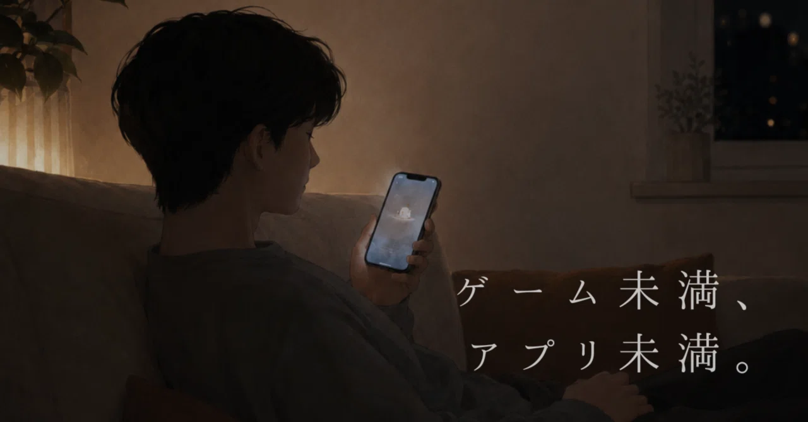
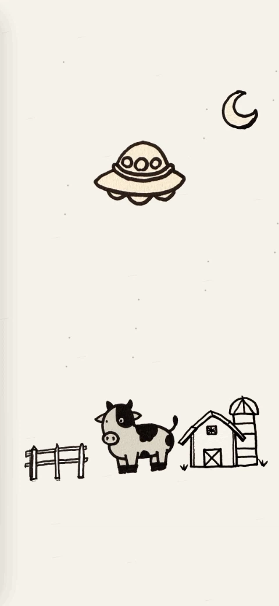
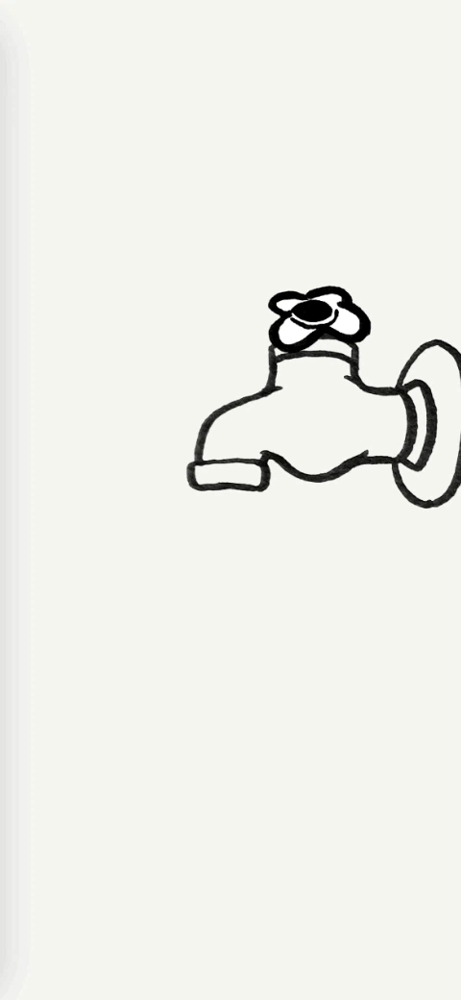
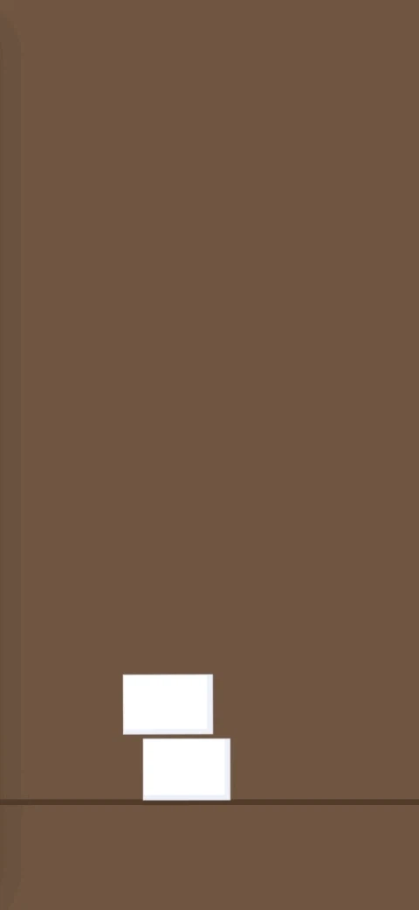

ゲーム未満、アプリ未満の心地よさ
「公開予定もないアプリを21個作っていた話」を書いてから、気づけば4か月以上経っていた。
始めた当初よりも、反応をもらえるようになって嬉しい。
XやRedditなど、他のSNSの使い方もだんだん分かってきた。
その一方で、以前はよく見かけていた方たちが、
一人、また一人と静かになっていくのを眺めるのは、少し寂しい。
SNSのスピードなのか、少しお休み中なのか、
理由はまだよく分からない。
ただ、その横で、
自分は相変わらずソファに寝転びながらiPhoneを触っていた。
どうやら私のスタンスは、
思いのほか「継続向き」だったらしい。
最初から、何かを継続するつもりがあったわけではない。
「ちゃんとしよう」とか「続けよう」と決めてしまうと、
急に止まってしまう感じがあった。
仕事で疲れた夜に、誰かの役に立つものをつくり出そうとしても、
きっと良いものは生まれなかったと思う。
なぜ続いたのか。
努力というよりも、癖に近いようなものかもしれない。
便利だからではなく、
完成させたいからでもなく、
「ちょっと触りたい」が続いていた。
触れるらくがき
最近は、アプリをつくるのではなく、
「#触れるらくがき」というものをつくり始めた。
UFOが牛の黒い模様だけを吸い取るとか、
蛇口からおばけが顔を出すだけとか、
豆腐がぷるぷるするタワーとか。

バズりそうなものでも、役に立つものでもない。
「触ると少し反応する落書き」ぐらいのもの。
ゲーム未満、アプリ未満。
でも、なぜか触りたくなる。
その曖昧な距離感が今はかなり気に入っている。
このくだらない断片を重ねていくと、
いつか、子供の頃に触っていた「音のなる絵本」
みたいなものに繋がっていくのかもしれない。
そうなるといいな、とは密かに思っている。
ただ、今は目の前のおばけが出てくるタイミングを微調整しているだけで十分だ。
以前より、人にアプリを見せることも怖くなくなってきた。
見せることで、自分の中だけでは分からなかった面白さも見えてくる。
今日もまた、静かになった部屋の片隅で、iPhoneを片手に楽しんでいる。

